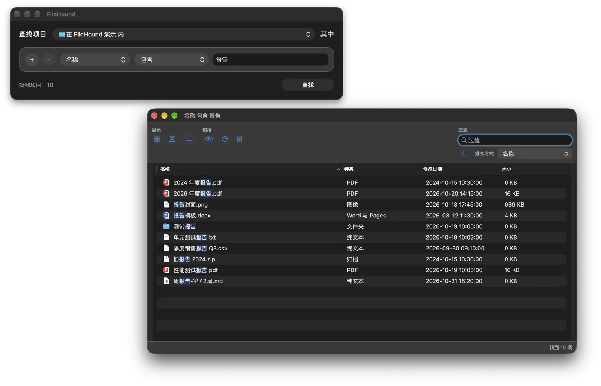

系统目录
/System、/private/etc 等系统位置。授予「完全磁盘访问权限」后，其他 App 的数据也能搜到。
macOS 文件搜索 · 不建索引
FileHound 不维护索引，每次搜索都读取磁盘此刻的真实状态。系统目录、隐藏文件、App 包内容都在搜索范围内，可以按名称、扩展名、日期、大小、种类、标签、注释、文本内容等条件组合查找。
示意动画：琥珀色是匹配项，标签说明它在 Spotlight 的盲区里。
01盲区
Spotlight 依赖索引，系统目录、隐藏文件和包内容都不在它的收录范围里。FileHound 每次直接遍历目录或扫描卷目录，这些位置会被逐项检查。
/System、/private/etc 等系统位置。授予「完全磁盘访问权限」后，其他 App 的数据也能搜到。
.ssh、.config、~/Library 等不可见项目。搜索时可以选择包含或排除。
.app 等包内部的文件，例如 Contents/Info.plist。同样可以选择包含或排除。
其他用户的主目录、/private/var/root 等。安装特权辅助程序后，只在当前账户无权读取时经由它访问，只读文件。
02功能

名称、扩展名、路径、文件夹名、修改 / 创建 / 上次打开日期、大小、种类、标签、注释、文本内容、脚本，条件之间是“且”。支持通配符、正则表达式与“包含任一”，可区分大小写和变音符号。
启动卷、所有磁盘、主目录、访达当前选中的文件夹、最近使用的位置，或任意文件夹（可从访达直接拖入）。可以限制文件夹深度和结果数量。
列表、树形、网格，支持过滤、排序和 Quick Look 预览。
打开、在访达中显示、重命名、移到废纸篓（可放回原处）、设置标签、拷贝路径，也可以把结果拖到访达或其他 App。
导出为 CSV（Excel / Numbers 可打开）或纯文本路径列表，快捷键 ⇧⌘E。
⌘N 另开查找窗口，条件与结果互不影响。搜索进行中就能查看已找到的结果，⌘R 按结果窗口的条件重新搜索。
存储常用搜索，查看最近的搜索记录，用全局快捷键随时唤起查找窗口。
简体中文、繁体中文、英文，应用内切换无需重启；外观可选浅色、深色或跟随系统。
03原理
没有常驻后台进程，也不占额外磁盘。每次搜索看到的都是磁盘此刻的状态，一次搜索的链路如下。
搜索范围 + 若干规则，组装成 SearchRequest
mdfind 流式读取候选，尽快给出第一屏
searchfs 由内核直接扫描卷目录
getattrlistbulk + 最多 8 个线程
每个候选都走同一个判定函数，廉价规则先判
按路径去重、限制数量，约 100ms 推送一次
列表 / 树形 / 网格，搜索中持续刷新
04性能
基准测试使用与 App 相同的搜索引擎源码，编译成命令行程序后与系统工具对比。条形长度代表耗时，越短越快；动画按真实耗时等比例回放。
测于 2026-10-02 · Apple M2 Max（12 核）· 32 GB · macOS 27.2 · 热缓存，预热 1 次后取 3 次中位数
/System/Library · 458,219 个条目 · 名称包含 plist · 35,699 个结果
mdfind -onlyin 用时 0.39 s，但 Spotlight 不收录 /System，只返回 2 个结果，无法比较。倍数相对 find。
System + Data 卷约 707 万个对象，另有 4 个嵌套卷 · 名称包含 plist
卷目录搜索返回 295,472 个结果，遍历为 290,156 个。mdfind -name 用时 1.06 s，只含 Spotlight 已索引的 11,430 条。纯字母片段需勾选「区分变音符号」才会走卷目录搜索。
Xcode 自带 MacOSX.sdk 的 Frameworks · 13,290 个条目 · 内容包含 kCFAllocatorDefault
FileHound 与 ripgrep 处在同一量级。它多出的 1 个结果是指向 CoreFoundation.tbd 的符号链接，grep -r 与 rg 默认跳过。
测的是引擎核心（列目录 / 卷搜索 + 规则匹配），不含为每个命中项读取完整属性、生成结果行和渲染界面的开销。冷缓存时各实现都会明显变慢，请以数量级和相对关系为准。
getattrlistbulk 一次系统调用取回一批子项的名称和类型。单线程遍历 /System/Library 从 46.8 s 降到 5.7 s。
工作线程共享一个深度优先的待遍历目录栈，内存平稳。在批量读取的基础上再从 5.7 s 降到 1.5 s。
searchfs 在内核里线性扫描卷目录，多个卷并发，每次最多停留 200ms 就交出已找到的结果。
名称、扩展名、路径先判，属性按需读取并缓存。不命中的条目除了批量列目录，不再多一次系统调用。
64MB 以内用 pread 一次读入，更大的文件用内存映射；memmem 按 UTF-8 / UTF-16 / Latin-1 编码预筛。
Spotlight 预取与遍历并行，通常不到一秒就有第一批结果，之后约每 100ms 推送一次。
05下载
FileHound-arm64.dmg
X86_64
Intel 芯片
使用 Intel 处理器的 Mac
FileHound-x86_64.dmg
需要 macOS 13.0 或更高版本。不确定芯片类型时，打开「苹果菜单 > 关于本机」，看「芯片」或「处理器」一栏。
安装包已经过 Apple 公证，打开 DMG 后把 FileHound 拖进「应用程序」文件夹即可。应用内会自动检查更新，只下载与本机芯片匹配的版本。
搜索系统目录或其他 App 的数据时，在「系统设置 > 隐私与安全性 > 完全磁盘访问权限」中允许 FileHound；偏好设置的「权限」页可以检查授权状态。